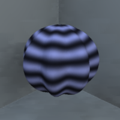
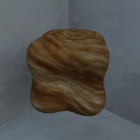

Setting material and texture properties¶
Material¶
The appearance of a model can be changed by changing its material properties. By setting these properties you can control the color, how the material reflects light, its transparency, and so forth. Setting materials themselves is not part of ShapeToolbox, but you can include information in the model about material library files and material names.
Material library (.mtl) files¶
The materials are usually specified in a separate file. These materials are named, and the the .obj-file where the model is saved then refers to these files for material specifications. A ‘material template library’ (.mtl) file format that accompanies an .obj-file is a common way to define the materials, but not all renderers understand the .mtl files (for example Radiance; more on that later).
Note that ShapeToolbox does not have any functionality to create the material specifications. But it does have an option to define the material names and the name of the .mtl-file from which those materials are found. An example might help:
objMakeSine('sphere',[12 .15 90 90],'material',{'matfile.mtl','red_plastic'},'redsphere.obj');
will produce the file redsphere.obj that contains the model object
and references to the material library matfile.mtl and to the
material red_plastic. Now, if in the same directory there is a
file matfile.mtl with the following lines:
newmtl red_plastic
Ka 1.0000 0.0000 0.0000
Kd 1.0000 0.0000 0.0000
Ks 1.0000 1.0000 1.0000
Ns 100
illum 1
the model, when viewed, should appear shiny red, that is, not entirely unlike:

Materials in Mitsuba¶
The various programs and renderers available differ in the way the materials are specified. Some may not understand or use the .mtl-files. In these cases you have to define the materials in the native way for the program you’re using.
The following shows how to include the obj-file produced above in a Mitsuba scene (Mitsuba uses xml files for its scene descriptions; the following is a snippet of such an xml file). It loads the object and sets its material to red plastic:
<shape type="obj">
<string name="filename" value="redsphere.obj"/>
<bsdf type="plastic">
<srgb name="diffuseReflectance" value="#ff0000"/>
</bsdf>
</shape>
Materials in Radiance¶
When using Radiance, you must, first, convert the .obj-file to a
format Radiance knows how to use. The simplest is to use the
obj2rad -program of Radiance. To convert the model from the above
example to a Radiance .rad-file, one would do in the terminal
(assuming Radiance is installed, a process which most definitely will
never be covered in this tutorial):
obj2rad redsphere.obj > redsphere.rad
The resulting redsphere.rad can now be rendered with Radiance.
The material names survive the conversion—conversion to .rad keeps
the name of the material we defined in the .obj-file
(‘red_plastic’)—but Radiance does not use the associated material
library (the .mtl-file), as its material specifications are different
(Radiance material desciptions correspond to physical materials such
as plastic, glass, and metal). You must specify the material
red_plastic in Radiance to get the desired appearance. Something
along the lines of:
# modifier material material_name
void plastic red_plastic
0
0
5 1.0 0.0 0.0 .02 0
# red green blue specularity roughness
Note: If the .obj-file does not contain material names (if no materials are defined using the ‘material’-option), Radiance assigns the default material ‘white’ to the object in the obj2rad-conversion.
This section is not meant to be a rendering tutorial, it only explains how the references to materials are defined when creating the model. More on rendering in a later section.
No groups¶
In .obj-files, faces can be assigned to different groups so that different materials can then be specified for different parts of the object. No groups for the faces and materials are implemented in ShapeToolbox. You can only set one material for the whole object.
Adding texture¶
In the previous section, we defined a material that set the color and specularity of the whole object. With texture mapping it is possible to define more complex surface color or texture patterns. ShapeToolbox can compute texture coordinates (UV-coordinates) and save them with the model. These coordinates can be used to map a texture (usually an image the user provides) onto the surface of the object.
By default, the computation of texture coordinates is turned off. To turn it on, use the ‘uvcoords’-option and set its value to ‘true’
objMakeSine('sphere',[8 .1 0 0],'uvcoords',true,'sphere_with_uvcoords.obj');
Texture descriptions in .mtl -files¶
If you are using a program that understand mtl-files, you can use them to define textures. To do this, use the ‘material’-option as in the previous section on material properties. Setting the ‘material’-option forces the computation of the UV-coordinates. For example:
objMakeSine('sphere',[8 .1 0 0],'material',{'matfile.mtl','mytexture'},'texturedsphere.obj');
produces a file called ‘texturedsphere.obj’ which includes the UV-coordinates for texture mapping. It also contains a reference to the file ‘matfile.mtl’ and defines ‘mytexture’ as the material for the object.
So far, we haven’t mapped any textures yet. The texture to map to the UV-coordinates of the object we created has to be defined somewhere, usually in the .mtl-file. If we have an image file ‘texture.tiff’ that contains a sine wave grating, coincidentally with the same number of cycles (eight) as the model we made above:

and we define the material ‘mytexture’ in the file ‘matfile.mtl’ like so:
newmtl mytexture
Ka 0.500 0.500 0.500
Kd 0.500 0.500 0.500
Ks 0.500 0.500 0.500
illum 2
map_Ka texture.tiff # ambient texture map
map_Kd texture.tiff # diffuse texture map
map_Ks texture.tiff # specularity texture map
and then view the model, we should see:

In the above example, the material library file ‘matfile.mtl’ sets the same image—’texture.tiff’—as the texture map for ambient, diffuse, and specular reflectivity of the object. The values for Ka, Kd, and Ks multiply the values of the texture maps.
Next, make another model with the modulation in opposite phase, but use the same texture as above:
objMakeSine('sphere',[8 .1 180 0],'material',{'matfile.mtl','mytexture'},'texturedsphere2.obj');

By using a different image as texture and/or changing the material properties, you can have the texture pattern at a different orientation, with a tint:
or map a picture of cat’s fur onto a bumpy shape to get:
which should prove useful for some carefully controlled, low-level psychophysics.